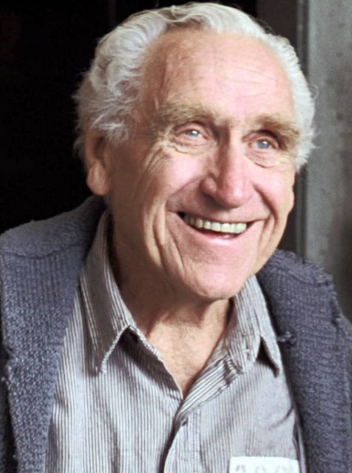
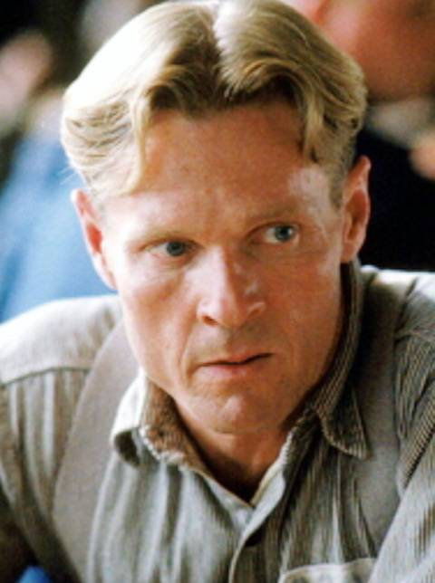
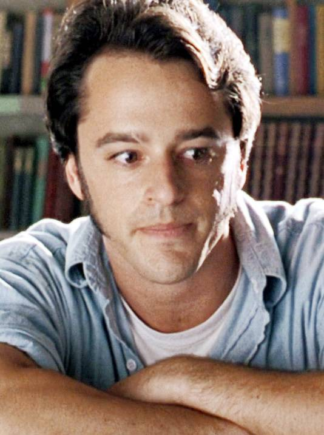
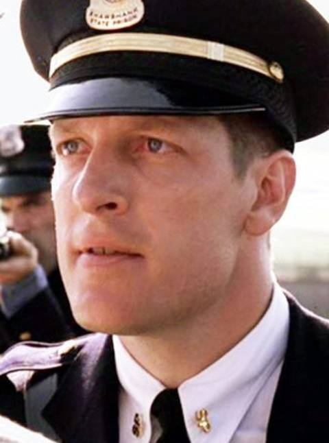

安迪·杜佛兰（Andy Dufresne）
银行家。被误当成杀妻凶手而被判无期徒刑，并关进肖申克监狱。在监狱中，他与瑞德等人成了朋友，他创办了新的监狱图书室，还利用自己的知识帮助大家打点自己的财务，典狱长发现他的理财特长后让他帮助自己清洗黑钱做假账。在监狱服役的19年间，他利用从瑞德那里买来的小锤子挖出了一条逃狱通道，并重获新生。

布鲁克斯·海特伦（Brooks Hatlen）
肖申克监狱的囚犯，被狱友们称作“老布”，负责监狱里的图书馆，他与一只小鸟作伴。狱警将安迪安排到老布这里方便安迪为狱警们办理避税。老布与安迪成了朋友。后来，老布面对刑满释放的机会他却宁愿以身试法也不愿离开监狱，因为在监狱服役50年的他，已经习惯了监狱里的体制化，外面的新世界使他处处不适应，无法生存。

海伍德（Heywood）
肖申克监狱的囚犯。也是安迪和瑞德一伙人的朋友。在老布挟持人质的事件中被老布挟持过。他也经常向其他狱友讲述安迪的传奇故事。
埃利斯·“瑞德”·雷丁（Ellis Boyd "Red" Redding）
肖申克监狱的囚犯，因谋杀被判无期徒刑。他在狱中有门路向狱友们有偿提供各种违禁品。与安迪结为好友后，为安迪提供了小锤子、海报等各类物品。曾经数次申请假释，但均被驳回。安迪逃狱后的几年，瑞德终于申请假释成功，出狱并回归社会，后来，他前往与安迪约定好的地方，两人得以重逢。

汤米·威廉姆斯（Tommy Williams）
肖申克监狱的囚犯。曾多次因为盗窃罪入狱，在多个不同监狱服役过。他不识字，他拜安迪为师想要考个学历，安迪觉得他有天赋，很喜欢他。某次，在与瑞德闲聊时，汤米发现自己与安迪杀妻案的真正凶手在同一间牢房待过。他将事实告诉安迪后，安迪想要翻案，典狱长怕安迪出狱后无人再帮他洗钱，而在暗中伸出黑手。
塞缪尔·诺顿（Samuel Norton）
肖申克监狱的监狱长。当得知了安迪的理财能力之后，他开始利用安迪替自己洗黑钱，做假账。并且在新囚犯汤米向安迪讲述了安迪蒙冤入狱的实情之后，诺顿不想让安迪翻案，便找机会暗杀了汤米。安迪成功逃狱之后，揭发了诺顿的罪行，诺顿只得自食其果。

拜伦·哈德利（Byron Hadley）
肖申克监狱的警卫队长，也是监狱长诺顿的心腹之人。他为人残暴，经常殴打囚犯。有次，他继承了一笔遗产，却因为需要缴纳大量税金而烦恼，安迪利用自己的财务知识替他解决了问题。在监狱长被安迪举报之后，他也受到了应有的惩罚。